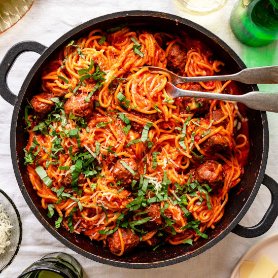

Spaghetti!

Description
A pasta dinner is often a go-to when looking for a quick and easy meal, and this spaghetti with meatballs recipe is very efficient.
This simple five-ingredient recipe calls for jarred sauce and precooked meatballs, making it a snap to put togther. All the herbs and spices are
soaked up by the pasta creating an exquisite flavor. Serve this dish with some toasted garlic bread and a green salad for a complete meal.